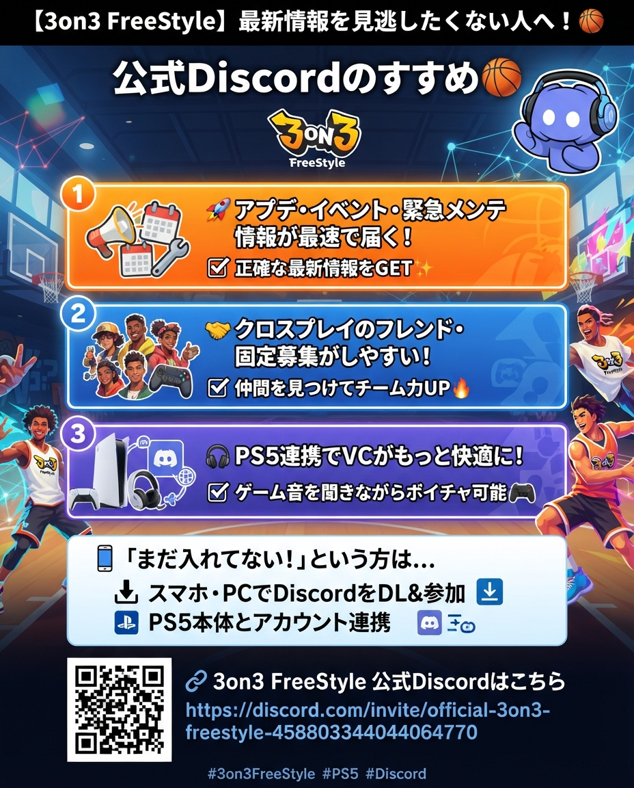
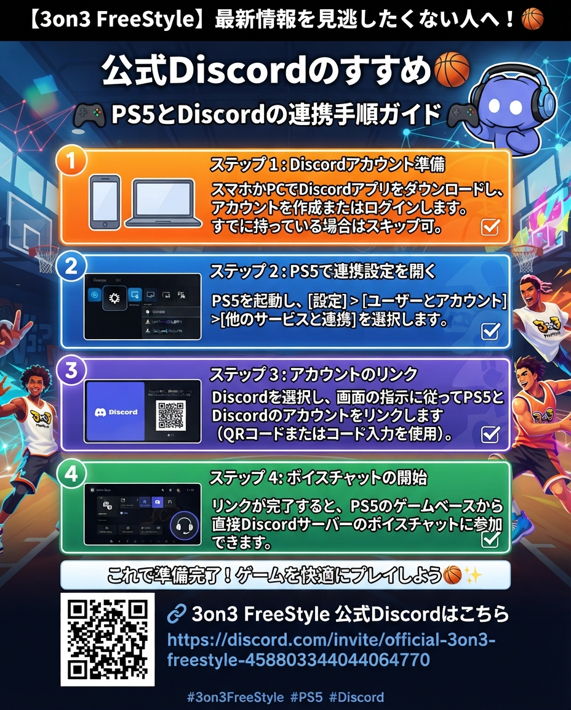
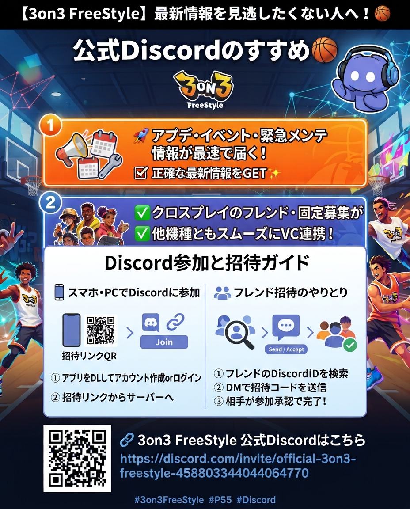

【3on3 FreeStyle】最新情報を見逃したくない人へ！公式Discordのすすめ🏀
アップデート情報やメンテナンスの最新状況、実は「公式Discord」が一番早く正確に入ってくるのを知っていますか？特にPS5でプレイしている人は、PS5本体とDiscordを連携（リンク）させておくのがめちゃくちゃおすすめです！

Discordを取り入れるメリット
✅ アプデ・イベント・緊急メンテの情報が最速で届く
✅ クロスプレイのフレンドや固定メンバーの募集がしやすい
✅ PS5と連携すれば、ゲーム音を聞きながらヘッドセット1つでそのままボイスチャットが可能！
PS5とDiscordの連携方法
PS5とDiscordアカウントを連携しておくと、DiscordのボイスチャットをPS5側でそのまま使えるようになります。手順はかんたんです。
STEP 1 PS5の「設定」→「ユーザーとアカウント」→「連携サービス」→「Discord」を選ぶ
STEP 2 画面に表示されるQRコードをスマホで読み取る（または案内されたページでコードを入力する）
STEP 3 Discordにログインして、PlayStation™Networkアカウントとの連携を許可すれば完了！
STEP 4 あとはPS5のコントロールセンター→「ゲームベース」からDiscordのボイスチャットに参加できる。スマホやPCのDiscordアプリで入ったボイスチャンネルをPS5へ転送することも可能
※PS5のシステムソフトウェアは最新の状態にしておいてください。連携の解除も「連携サービス」の同じ画面からできます。

まずは参加してみよう
「まだ入れてない！」という方は、まずスマホやPCでDiscordアプリを入れて公式サーバーに参加してみてください👍

🔗 3on3 FreeStyle 公式Discordはこちら
#3on3FreeStyle #PS5 #Discord
※SRTguideは非公式ファンサイトです。リンク先のDiscordはゲーム公式のサーバーです。